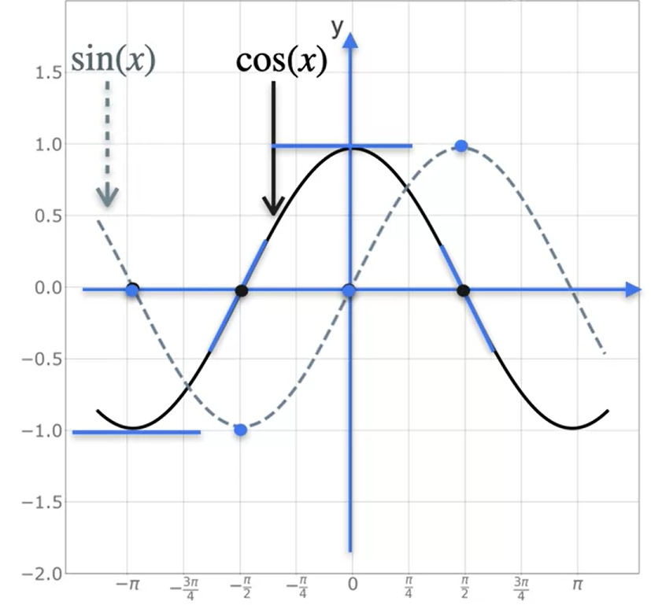

Módulo 1: Derivadas e otimização
curso
Derivadas
coursera
Cálculo
Machine Learning
Data Science
Deep Learning
Python
R
Anotações do módulo 1 do curso de Álgebra linear para aprendizado de máquina e ciência de dados
Derivada
Motivação
- Otimização de funções ⇒ importante para M.L
- Conceitos matemáticos utilizados para treinar um modelo
- Gradientes
- Derivadas
- Otimização
- Funções de perda e custo
- Gradação descendente
Introdução à derivadas
- Uma derivada é a taxa de variação instantânea de uma função.
Derivadas e tangentes
Inclinações, máximos e mínimos
- Propriedades
- Os pontos máximos e mínimos de uma função são as regiões onde a \(\dfrac{dy}{dx} =0\), isto é, onde a inclinação da reta for igual a 0.
Derivadas - Notação
- Notação de Leibniz
- \(\dfrac{dy}{dx} = \dfrac{d}{dx}f(x)\)
- Notação de Lagrange
- \(f´(x)\)
Algumas derivadas comuns - Linhas
Uma linha é uma constante
- Uma constante tem sempre uma derivada igual a 0.
- Uma reta do tipo \(f(x) = ax+b\) ⇒ \(f´(x) = a\)
Algumas derivadas comuns - quadráticas
- Para a função do tipo; \(f(x) = x^2\) ⇒ \(f(x´) = 2x\)
Algumas derivadas comuns - Polinômios de grau superior
- Para uma função do tipo; \(y=f(x) = x^3\) ⇒ \(f´(x) =\) \(3x^2\)
Algumas derivadas comuns - Outras funções de potência
- Para a função do tipo \(y = f(x)=x^{-1}=\frac{1}{x}\) ⇒ f´(x) = \(-x^{-2}\)
- Para as funções potência derivamos da seguinte forma ⇒ para a \(f(x)=x^n\) ⇒ \(f´(x) = \frac{d}{dx} f(x)=nx^{(n-1)}\)
- Exemplo
Função inversa e sua derivada
- \(g(x)\) e \(f(x)\) são inversas
- \(g(x) = f^{-1}(x)\)
- \(g(f(x)) = x\)
Derivada de funções trigonométricas
Função seno
- \(f(x) = sin(x) ⇒ f´(x) = cos(x)\)
- \(f(x) = cos(x)\) ⇒ \(f´(x) = - sin(x)\)

Significado do exponencial \((e)\)
- número de Euler ⇒ \(e = 2,71828182...\)
propriedades
\(\begin{bmatrix}n&1&10&100&1000& \infty \\(1+\frac{1}{n}^n) &2&2,594&2,705&2,717&e \end{bmatrix}\)
\(f(x) = e^x\) ⇒ \(f’(x)=e^x\)
Derivada de \(e^x\)
Derivada de \(log(x)\) ⇒ Logaritmo natural
Existência da derivada ⇒ Funções não diferenciáveis
Propriedade da derivada: multiplicação por escalares
- Dada a função \(f=4g\) ⇒ \(f’=4g’\)
Propriedade da derivada: regra da soma
- Dada a função \(f = g + h\) ⇒ \(f’=g’+h’\)
Propriedade da derivada: regra do produto
- Dada a função \(f = gh\) ⇒ \(f’ = f’h+gh’\)
Propriedade da derivada: regra da cadeia
- Data a função \(f(g(h(t)))\) ⇒ \(f’(g(h(t)))*g’(h(t))*h’(t)\)